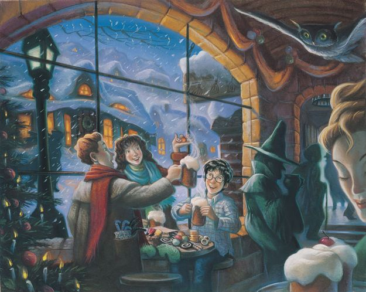
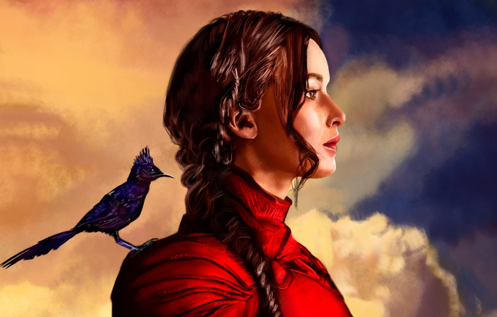
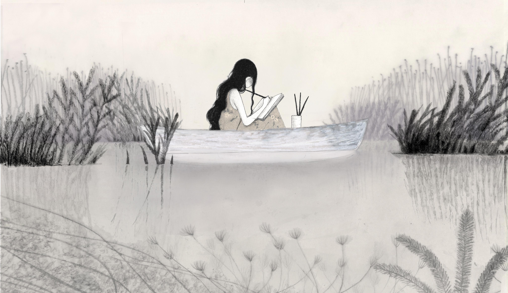
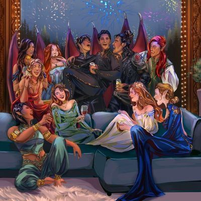

HARRY POTTER SERIES

This is the first book (and series) that got me back into reading after a long stint off books. You may have seen in my 'hobbies' sections but I spent a long time after university reading books that I thought I should be reading - for example to educate myself further, and understanding more about the world. After a while, it made me fall out of love with reading and I started to dwindle on the number of pages I was reading at the time. Hence why I enjoyed reading these so much!
This series is all about a young boy called Harry Potter, who is born into a magical world of wizards and witches however Lord Voldemort, the villain of the books, heard of a prophecy where Harry was linked in. Voldemort being scared of death, set out to kill Harry so he would no longer be in any danger.
I'd like to also clarify that my thoughts and enjoyment from Harry Potter does not align with the viewpoints of the author - J.K. Rowling. Her transphobia is absolutely not acceptable and should not be tolerated. The series of Harry Potter transcends the author, however I actively will not buy anything that allows profit to the author.
HUNGER GAMES SERIES

I read this book when I was younger. Something great about it was that I was watching the same time the movies came out! It meant I could really visual the action as I read. There were originally three books, and a prequel has just come out.
In a dystopian future, the totalitarian nation of Panem is divided into 12 districts and the Capitol. Each year two young representatives from each district are selected by lottery to participate in The Hunger Games. Part entertainment, part brutal retribution for a past rebellion, the televised games are broadcast throughout Panem. The 24 participants are forced to eliminate their competitors while the citizens of Panem are required to watch. When 16-year-old Katniss' young sister, Prim, is selected as District 12's female representative, Katniss volunteers to take her place. She and her male counterpart, Peeta, are pitted against bigger, stronger representatives, some of whom have trained for this their whole lives.
A great book for people interested in dystopian fiction writing. It probably is for a slightly younger audience, with typical troupes thrown in.
WHERE THE CRAWDADS SING

This makes such a great read! The author is a zoologist herself, so is able to describe the landscape, animals and all interactions so vividly that is paints a picture easily. I wasn't expecting this book to be a murder mystery, but actually I loved it! This book was on Reese Witherspoon's book list.
"Where the Crawdads Sing" is a coming-of-age story of a young girl raised by the marshlands of the south in the 1950s. When a boy turns up dead in the marshland, and inexplicably linked to Kya, the Marsh Girl is the prime suspect in his murder case. The story follows Kya's life, from birth all the way to death.
There are sections of this book where the plot can drag, and not much happens for page after page. Although the descriptions are beautiful, they don't always carry the story and, at points, it can get slow to read. I highly recommend pushing through and finishing this book.
ACOTAR SERIES

This is my most recent mythical series I've been enjoying. It's great to pictures the worlds that the protagonist travels to and all the creatures within the book. There are currently 8 books and the author is still writing! Although two are novellas. The first, second and third book average at around 650 pages per book. It's a long read but well worth it, and allows time to build each character into a real plot point.
When a human huntress called Feyre kills a wolf in the woods, a terrifying creature arrives to demand retribution. Dragged to a treacherous magical land she knows about only from legends, Feyre discovers that her captor is not truly a beast, but one of the lethal, immortal faeries who once ruled her world. As Feyre navigates its dark web of politics, passion, and dazzling power, a greater evil looms—and she might be key to stopping it. But only if she can harness her harrowing gifts, heal her fractured soul, and decide how she wishes to shape her future—and the future of a world cleaved in two.
If you're interested in deep diving into a world of fairies, war and beautiful landscape, this is probably a fantastic book for you!